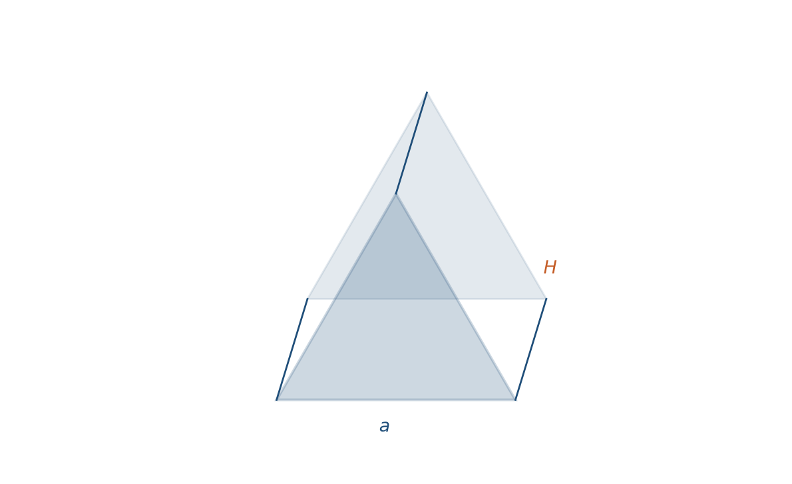
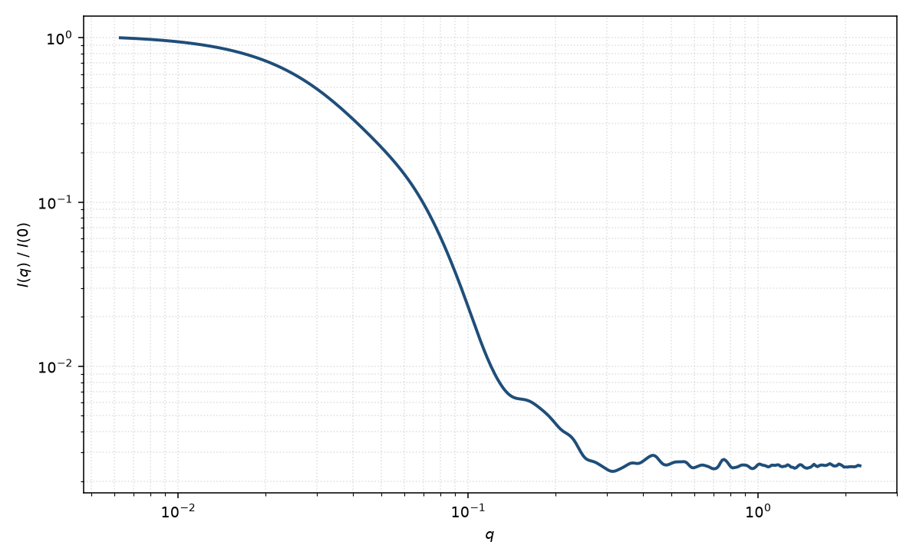

三棱柱
prism
适用场景
底面为等边三角形、高度 $H$ 的均匀直棱柱。适用于三角纳米柱、部分金/银纳米棱镜（有限厚度）、以及截面接近正三角形的晶须。
细长（$H\gg a$）时中间区接近圆柱的 $q^{-1}$；扁平（$H\ll a$）时接近三角薄片的 $q^{-2}$。圆截面用圆柱；矩形截面用矩形棱柱。无限薄的正三角片不是本模型。
物理图像
直棱柱振幅分解为沿轴的 $\mathrm{sinc}(q_\parallel H/2)$ 与底面多边形的二维形式因子（Wuttke；Nayuk–Huber 系列对棱柱取向的处理）。粉末平均对极角与滚转角积分。回转半径由三角形 $R_{g,2\mathrm{D}}^2=a^2/24$ 与高度 $H^2/12$ 相加。
高 $q$ 振荡携带边长 $a$ 与棱的信息，比圆柱的 Bessel 极小更浅、相位不同。示意图 $I(q)$ 由体内均匀点的各向同性 Debye 求和给出，对应同一几何的粉末平均。
示意图


核心公式
$$F(\mathbf{q})=H\cdot\mathrm{sinc}\!\left(\frac{q_\parallel H}{2}\right)F_\triangle(q_\perp,\psi),$$$F_\triangle$ 是边长 $a$ 的等边三角形二维形式因子，$\psi$ 为截面方位。粉末
$$P(q)=\langle |F|^2\rangle_{\theta,\psi}/|F(0)|^2.$$体积 $V=\sqrt{3}\,a^2 H/4$。$R_g^2=a^2/24+H^2/12$。
参数表
| 参数 | 符号 | 含义 | 单位 | 典型范围 |
|---|---|---|---|---|
| 边长 | $a$ | 等边三角形边长 | Å 或 nm | 10–800 Å |
| 高度 | $H$ | 沿棱柱轴的全长 | Å 或 nm | 10–4000 Å |
| 取向角 | $\theta,\phi$ | 轴及截面方位（二维） | 度 | 由取向分布约束 |
| 衬度 | $\Delta\rho$ | 均匀体相对溶剂 SLD 差 | Å$^{-2}$ | 组成决定 |
| 标度 / 本底 | $\mathrm{scale}$, $B$ | 前置因子与本底 | 与强度单位一致 | 实验相关 |
拟合注意
高度多分散改中间斜率跨度；边长多分散抹高 $q$ 振荡，对应圆柱的长度 vs 半径，不可互换。一维数据上三角截面与“略扁的圆柱”易混淆，需电镜截面。
取向：粉末平均积掉轴与滚转；二维可出现三重对称，勿用圆柱的轴对称取向分布去套。磁性：三角截面退磁各向异性，磁 SLD 分通道。
相近模型
参考文献
- Nayuk, R.; Huber, K. Formfactors of Hollow and Massive Rectangular Parallelepipeds at Variable Degree of Anisometry. Z. Phys. Chem. 2012, 226, 837–854. DOI: 10.1524/zpch.2012.0257
- Wuttke, J. Numerically stable form factor of any polygon and polyhedron. J. Appl. Cryst. 2021, 54, 580–587. DOI: 10.1107/S1600576721001710